concentration = 100.0 # a floating-point number
day = 0 # an integer
site = "Waikato River" # a string
is_tidal = True # a boolean
print(concentration)
print(day, site, is_tidal)100.0
0 Waikato River Trueconcentration = 100.0 # a floating-point number
day = 0 # an integer
site = "Waikato River" # a string
is_tidal = True # a boolean
print(concentration)
print(day, site, is_tidal)100.0
0 Waikato River Trueday = 5
concentration = 47.6183
print(f"Day {day}: concentration = {concentration} mg/L")
print(f"Day {day}: concentration = {concentration:.2f} mg/L") # round to 2 decimals
print(f"Day {day}: concentration = {concentration:.0f} mg/L") # round to wholeDay 5: concentration = 47.6183 mg/L
Day 5: concentration = 47.62 mg/L
Day 5: concentration = 48 mg/La = 7
b = 2
print(a + b, a - b, a * b, a / b, a // b, a ** b)
# sum, diff, product, division, floor-div, power9 5 14 3.5 3 49x = 3.14159
print(round(x, 2)) # 3.14 — built-in rounding
print(round(x)) # 3 — no argument = to integer
print(int(x)) # 3 — truncates towards zero3.14
3
3values = [100.0, 95.0, 90.25, 85.7]
print(values)
print(values[0]) # first item (index 0)
print(values[1]) # second item
print(values[-1]) # last item
print(values[-2]) # second last
print(len(values)) # how many items in the list[100.0, 95.0, 90.25, 85.7]
100.0
95.0
85.7
90.25
4values = [10, 20, 30, 40, 50, 60, 70, 80]
print(values[0:3]) # [10, 20, 30] first three
print(values[2:5]) # [30, 40, 50] middle
print(values[:4]) # [10, 20, 30, 40] from the start
print(values[4:]) # [50, 60, 70, 80] to the end
print(values[-3:]) # [60, 70, 80] last three[10, 20, 30]
[30, 40, 50]
[10, 20, 30, 40]
[50, 60, 70, 80]
[60, 70, 80]history = [100.0]
history.append(95.0)
history.append(90.25)
print(history)
print(f"Started at {history[0]}, ended at {history[-1]}")[100.0, 95.0, 90.25]
Started at 100.0, ended at 90.25for step in range(5):
print(f"Step {step}")Step 0
Step 1
Step 2
Step 3
Step 4sites = ["Waikato", "Waipa", "Piako"]
for name in sites:
print(f"Loading data for {name}")Loading data for Waikato
Loading data for Waipa
Loading data for Piakofor day in range(0, 20, 5): # 0, 5, 10, 15
print(f"Day {day}: take a sample")Day 0: take a sample
Day 5: take a sample
Day 10: take a sample
Day 15: take a samplefor day in range(0, 20, 5): # 0, 5, 10, 15
print(f"Day {day}: take a sample")Day 0: take a sample
Day 5: take a sample
Day 10: take a sample
Day 15: take a sampletotal = 0
for value in [3.2, 4.1, 2.8, 5.5]:
total = total + value
print(f"Sum = {total}")
print(f"Mean = {total / 4}")Sum = 15.6
Mean = 3.9concentration = 100.0
decay_rate = 0.05
dt = 1.0
history = [concentration] # store the starting value
for step in range(10):
concentration = concentration - decay_rate * concentration * dt
history.append(concentration)
print(history)[100.0, 95.0, 90.25, 85.7375, 81.450625, 77.37809375, 73.5091890625, 69.833729609375, 66.34204312890625, 63.02494097246094, 59.87369392383789]# 1. A list comprehension (concise)
rounded = [round(c, 2) for c in history]
print(rounded)
# 2. A plain for loop (verbose but clearer for beginners)
rounded = []
for c in history:
rounded.append(round(c, 2))
print(rounded)[100.0, 95.0, 90.25, 85.74, 81.45, 77.38, 73.51, 69.83, 66.34, 63.02, 59.87]
[100.0, 95.0, 90.25, 85.74, 81.45, 77.38, 73.51, 69.83, 66.34, 63.02, 59.87]def celsius_to_kelvin(t_c): # 1. def 2. name 3. (inputs):
result = t_c + 273.15 # 4. the body — indented, does the work
return result # 5. return — hands a value backdef celsius_to_kelvin(t_c):
result = t_c + 273.15
return result
# nothing has printed yet — we only defined the function above.
# now we CALL it three times:
print(celsius_to_kelvin(0))
print(celsius_to_kelvin(25))
print(celsius_to_kelvin(-40))273.15
298.15
233.14999999999998def celsius_to_kelvin(t_c):
return t_c + 273.15
print(celsius_to_kelvin(100))373.15def rectangle_area(length, width):
return length * width
print(rectangle_area(5, 3))
print(rectangle_area(10, 2.5))15
25.0def decay_step(c, rate, dt):
"""Return the new concentration after one time step."""
return c - rate * c * dt
c = 100.0
for _ in range(3):
c = decay_step(c, 0.05, 1.0)
print(f"{c:.4f}")95.0000
90.2500
85.7375temperature = 32
if temperature > 30:
print("It is hot today.")It is hot today.temperature = 12
if temperature > 30:
print("It is hot today.")
else:
print("It is not hot.")It is not hot.concentration = 5.0
if concentration < 10:
print("Below the safe threshold")
elif concentration < 50:
print("Elevated but tolerable")
else:
print("Above the limit")Below the safe thresholdreadings = [4.2, 12.5, 8.1, 47.3, 55.0, 3.8]
for value in readings:
if value < 10:
label = "safe"
elif value < 50:
label = "elevated"
else:
label = "danger"
print(f"{value:>5.1f} mg/L -> {label}") 4.2 mg/L -> safe
12.5 mg/L -> elevated
8.1 mg/L -> safe
47.3 mg/L -> elevated
55.0 mg/L -> danger
3.8 mg/L -> safeimport numpy as np
# arange: like range, but for floats
time = np.arange(0, 10, 0.5)
print(time)
print(time[0:5]) # slicing works the same as lists
# linspace: N points evenly spaced from A to B (inclusive of both)
x = np.linspace(0, 2 * np.pi, 20)
print(f"x has {len(x)} points, first three: {x[:3]}")[0. 0.5 1. 1.5 2. 2.5 3. 3.5 4. 4.5 5. 5.5 6. 6.5 7. 7.5 8. 8.5
9. 9.5]
[0. 0.5 1. 1.5 2. ]
x has 20 points, first three: [0. 0.33069396 0.66138793]time = np.arange(0, 10, 1.0)
concentration = 100.0 * np.exp(-0.05 * time) # exact solution of dC/dt = -kC
print(np.round(concentration, 2))[100. 95.12 90.48 86.07 81.87 77.88 74.08 70.47 67.03 63.76]values = np.array([10.0, 20.0, 30.0, 40.0, 50.0])
print(values.mean()) # arithmetic mean
print(values.min(), values.max())
print(values.sum())
print(values[-3:].mean()) # mean of the last three — very common30.0
10.0 50.0
150.0
40.0import matplotlib.pyplot as plt
x = [0, 1, 2, 3, 4]
y = [0, 1, 4, 9, 16]
plt.plot(x, y)
plt.show()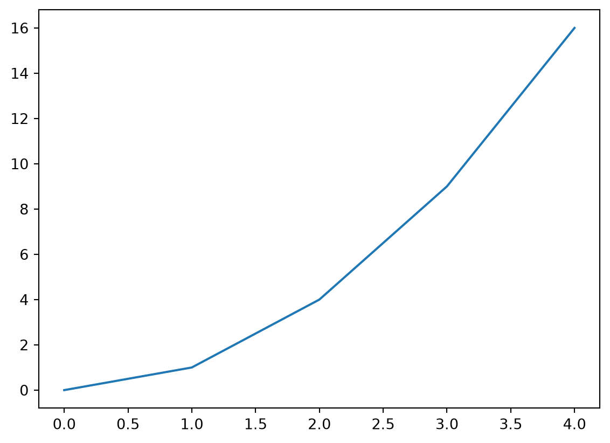
x = [0, 1, 2, 3, 4]
y = [0, 1, 4, 9, 16]
plt.plot(x, y)
plt.xlabel("Time (days)")
plt.ylabel("Population")
plt.title("My first labelled plot")
plt.show()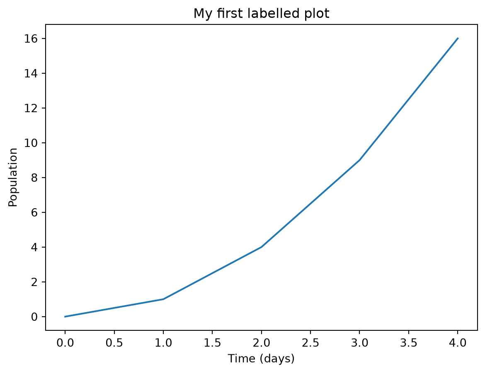
x = [0, 1, 2, 3, 4]
y = [0, 1, 4, 9, 16]
plt.plot(x, y, "o-") # "o" = circle markers, "-" = solid line
plt.xlabel("Time (days)")
plt.ylabel("Population")
plt.title("Line with markers")
plt.show()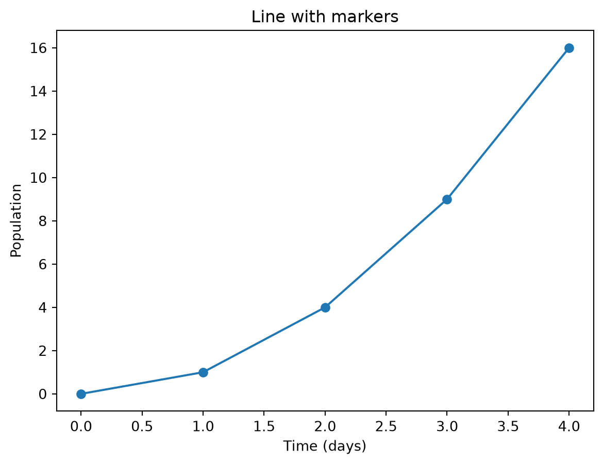
time = np.arange(0, 10, 0.5)
concentration = 100.0 * np.exp(-0.05 * time)
fig, ax = plt.subplots(figsize=(6, 3)) # make a figure and one set of axes
ax.plot(time, concentration, marker="o", linestyle="-")
ax.set_xlabel("Day")
ax.set_ylabel("Concentration (mg/L)")
ax.set_title("Exponential decay")
plt.show()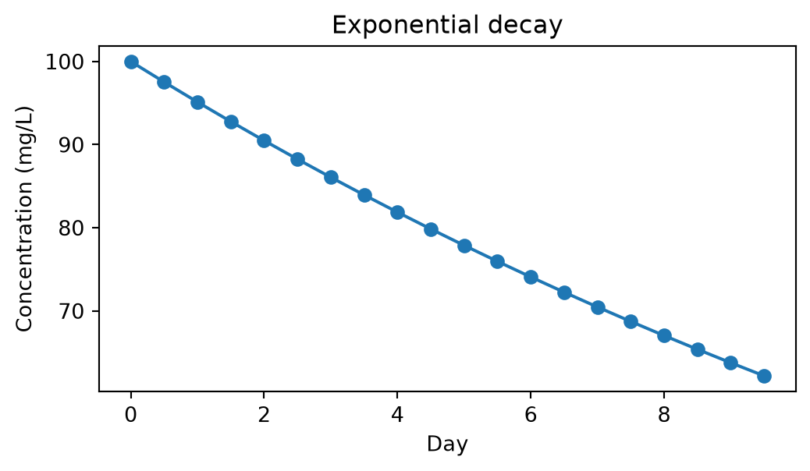
time = np.arange(0, 10, 0.5)
fig, ax = plt.subplots(figsize=(6, 4))
for k in [0.05, 0.1, 0.2]:
c = 100.0 * np.exp(-k * time)
ax.plot(time, c, marker="o", label=f"k = {k}")
ax.set_xlabel("Day")
ax.set_ylabel("Concentration (mg/L)")
ax.set_title("Effect of decay rate")
ax.legend()
plt.show()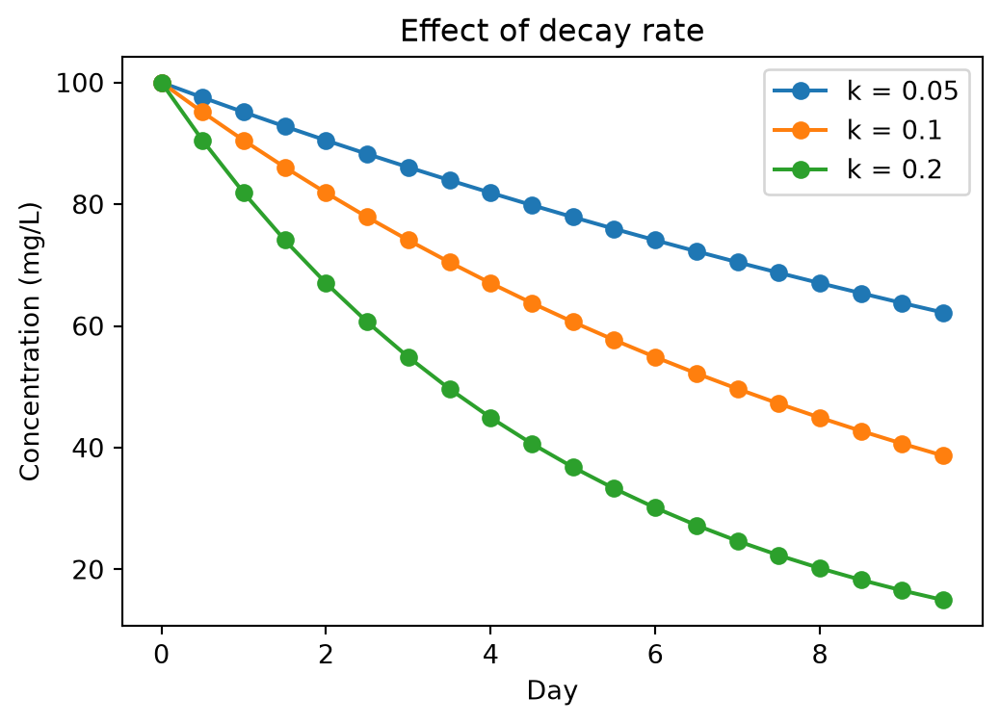
a = 2.0 # constant rate of change
u = 0.0 # initial condition
dt = 0.5 # time step
steps = 20
history = [u]
for _ in range(steps):
u = u + a * dt # forward difference: u_f = u_i + a*dt
history.append(u)
time = np.arange(len(history)) * dt
print(f"Started at {history[0]}, ended at {history[-1]}")
print(f"Length of history: {len(history)}")
print(f"First six values: {[round(h, 2) for h in history[:6]]}")Started at 0.0, ended at 20.0
Length of history: 21
First six values: [0.0, 1.0, 2.0, 3.0, 4.0, 5.0]x = np.linspace(0, 2 * np.pi, 20)
dx = x[1] - x[0] # spacing between grid points
u = np.sin(x)
exact = np.cos(x) # the true derivative
# np.roll shifts an array by one step
forward = (np.roll(u, -1) - u) / dx
centre = (np.roll(u, -1) - np.roll(u, 1)) / (2 * dx)
fig, ax = plt.subplots(figsize=(7, 4))
ax.plot(x[1:-1], exact[1:-1], "k-", label="Exact cos(x)")
ax.plot(x[1:-1], forward[1:-1], "o--", label="Forward")
ax.plot(x[1:-1], centre[1:-1], "s--", label="Centre")
ax.set_xlabel("x")
ax.set_ylabel("du/dx")
ax.set_title("Forward vs centre differencing")
ax.legend()
plt.show()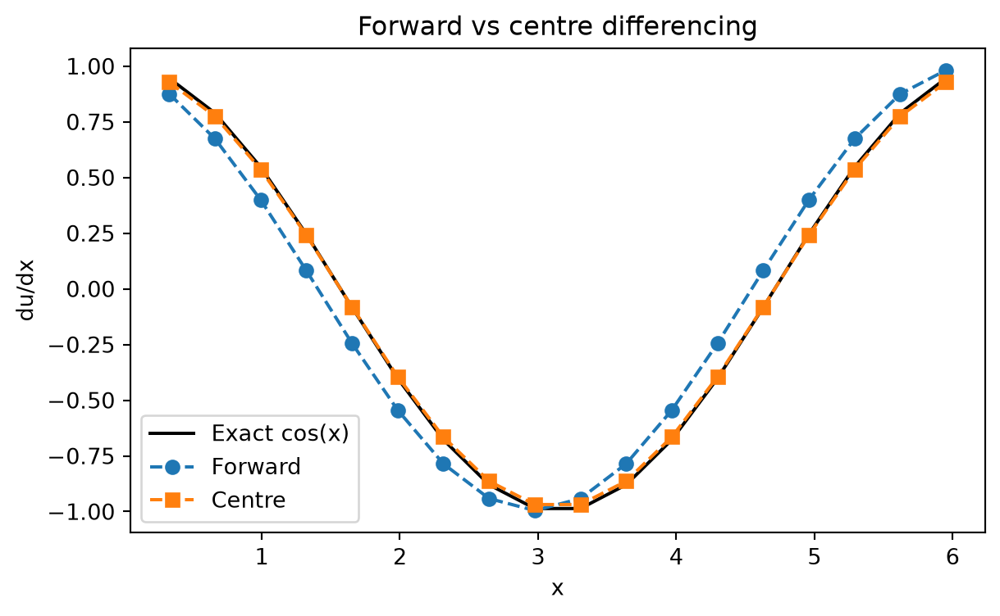
def decay_numerical(C0, k, dt, t_end):
"""Return arrays of time and concentration for forward-Euler tracer decay."""
n = int(t_end / dt)
C = C0
ts = [0.0]
Cs = [C0]
for i in range(n):
C = C + (-k * C) * dt # forward difference
ts.append((i + 1) * dt)
Cs.append(C)
return np.array(ts), np.array(Cs)
# The exact answer, for comparison
C0, k, t_end = 100.0, 1.0, 6.0
t_fine = np.linspace(0, t_end, 200)
exact = C0 * np.exp(-k * t_fine)
fig, ax = plt.subplots(figsize=(7, 4))
ax.plot(t_fine, exact, "k-", label="Exact")
for dt in [0.1, 1.0, 2.5]:
ts, Cs = decay_numerical(C0, k, dt, t_end)
ax.plot(ts, Cs, "o--", markersize=4, label=f"dt = {dt}")
ax.set_xlabel("Time")
ax.set_ylabel("Concentration C")
ax.set_title("Tracer decay: numerical vs exact")
ax.legend()
plt.show()
import numpy as np
import matplotlib.pyplot as plt
# ---- Parameters ----
V = 1.0e6 # lake volume (m^3)
Q = 5.0e3 # river inflow (m^3 per day)
C_in = 10.0 # incoming concentration (mg/L)
k = 0.05 # in-lake decay rate (per day)
# ---- Time settings ----
dt = 1.0 # time step (days)
days = 200
# ---- Initial condition ----
C = 0.0 # clean lake
# ---- Storage ----
history = [C]
# ---- Time loop ----
for _ in range(days):
dCdt = (Q * C_in - Q * C - k * V * C) / V # the rate of change
C = C + dCdt * dt # forward difference
history.append(C)
# ---- A quick look at the numbers ----
print(f"Started at {history[0]:.2f} mg/L")
print(f"After 10 days: {history[10]:.2f} mg/L")
print(f"After 50 days: {history[50]:.2f} mg/L")
print(f"After {days} days: {history[-1]:.2f} mg/L")Started at 0.00 mg/L
After 10 days: 0.39 mg/L
After 50 days: 0.86 mg/L
After 200 days: 0.91 mg/Lfig, ax = plt.subplots(figsize=(7, 4))
ax.plot(history)
ax.set_xlabel("Day")
ax.set_ylabel("Lake concentration (mg/L)")
ax.set_title("Reservoir box model: pollutant in a lake")
plt.show()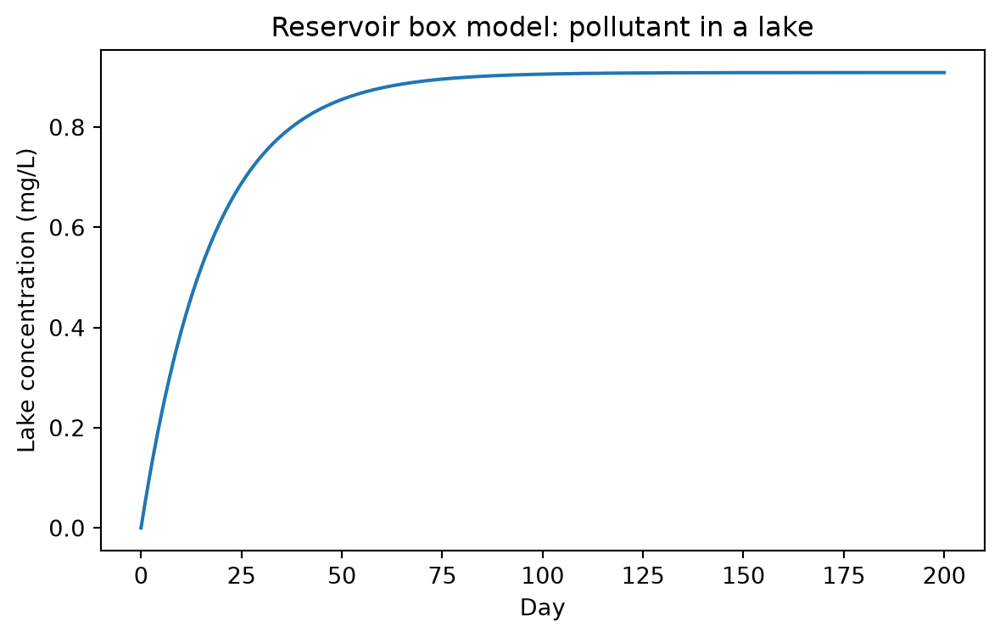
C_star = (Q * C_in) / (Q + k * V)
print(f"Analytical steady state: {C_star:.2f} mg/L")
print(f"Numerical final value: {history[-1]:.2f} mg/L")
print(f"Difference: {abs(C_star - history[-1]):.4f} mg/L")Analytical steady state: 0.91 mg/L
Numerical final value: 0.91 mg/L
Difference: 0.0000 mg/Lfig, ax = plt.subplots(figsize=(7, 4))
for k_test in [0.02, 0.05, 0.10]:
C = 0.0
history = [C]
for _ in range(days):
dCdt = (Q * C_in - Q * C - k_test * V * C) / V
C = C + dCdt * dt
history.append(C)
ax.plot(history, label=f"k = {k_test}")
ax.set_xlabel("Day")
ax.set_ylabel("Lake concentration (mg/L)")
ax.set_title("Effect of decay rate on the reservoir")
ax.legend()
plt.show()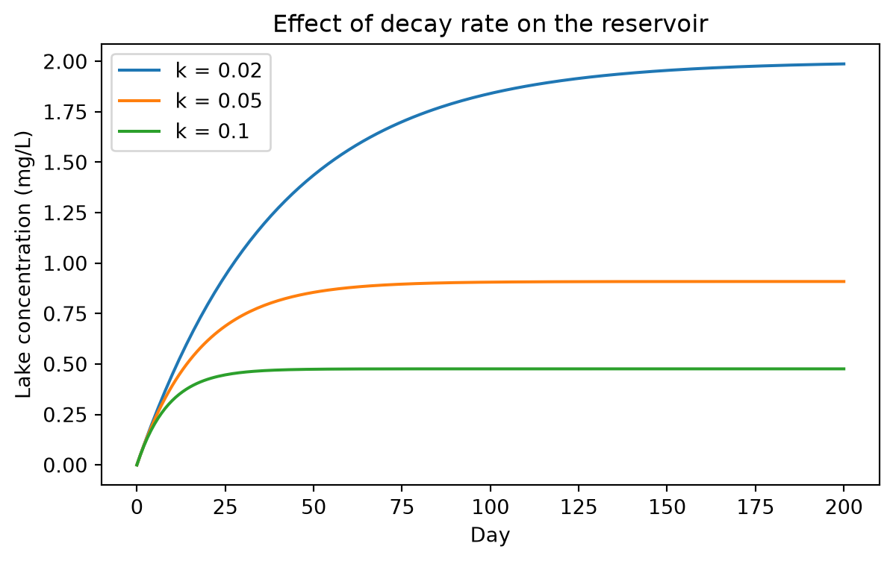
# ---- Inputs (illustrative; you will change these in the lab) ----
C_in = 0.05 # incoming sediment concentration (kg/m^3)
C_out = 0.03 # outgoing sediment concentration (kg/m^3)
U_in = 0.8 # incoming velocity (m/s)
U_out = 0.8 # outgoing velocity (m/s)
dx = 5000.0 # estuary length (m)
T = 12.4 * 3600 # tidal period (s)
eps = 0.4 # porosity
# ---- Discretised mass balance, solved for dz ----
dz = (C_in * U_in - C_out * U_out) / (dx * (1 - eps)) * T
print(f"Bed level change over one tidal cycle: {dz*1000:.2f} mm")
print(f"Positive means infill, negative means erosion.")Bed level change over one tidal cycle: 238.08 mm
Positive means infill, negative means erosion.def bed_change_mm(C_in, C_out, U_in, U_out, dx, T, eps):
"""Return the bed level change in millimetres over one tidal cycle."""
dz = (C_in * U_in - C_out * U_out) / (dx * (1 - eps)) * T
return dz * 1000
for C_out_test in [0.02, 0.03, 0.04, 0.05, 0.06]:
dz_mm = bed_change_mm(0.05, C_out_test, 0.8, 0.8, 5000.0, 12.4*3600, 0.4)
print(f"C_out = {C_out_test:.2f} kg/m^3 -> dz = {dz_mm:+.2f} mm")C_out = 0.02 kg/m^3 -> dz = +357.12 mm
C_out = 0.03 kg/m^3 -> dz = +238.08 mm
C_out = 0.04 kg/m^3 -> dz = +119.04 mm
C_out = 0.05 kg/m^3 -> dz = +0.00 mm
C_out = 0.06 kg/m^3 -> dz = -119.04 mm# ---- Parameters (the "knobs") ----
alpha = 1.1
beta = 0.4
gamma = 0.4
delta = 0.1
# ---- Initial populations ----
x0 = 10.0
y0 = 10.0
# ---- Time settings — keep dt small ----
dt = 0.01
t_end = 100.0
n_steps = int(t_end / dt)
# ---- Pre-allocate the arrays (NumPy is faster than growing lists here) ----
time = np.zeros(n_steps + 1)
prey = np.zeros(n_steps + 1)
pred = np.zeros(n_steps + 1)
# ---- Initial conditions ----
prey[0] = x0
pred[0] = y0
# ---- Forward-Euler loop ----
for i in range(n_steps):
x = prey[i]
y = pred[i]
dxdt = alpha * x - beta * x * y
dydt = delta * x * y - gamma * y
prey[i + 1] = x + dxdt * dt
pred[i + 1] = y + dydt * dt
time[i + 1] = (i + 1) * dt
# ---- Quick numerical summary ----
print(f"Simulation ran for {t_end} time units in {n_steps} steps of {dt}")
print(f"Prey min = {prey.min():.2f}, max = {prey.max():.2f}, mean = {prey.mean():.2f}")
print(f"Pred min = {pred.min():.2f}, max = {pred.max():.2f}, mean = {pred.mean():.2f}")Simulation ran for 100.0 time units in 10000 steps of 0.01
Prey min = 0.00, max = 36.28, mean = 3.72
Pred min = 0.13, max = 12.97, mean = 2.86fig, ax = plt.subplots(figsize=(8, 4))
ax.plot(time, prey, label="Rabbits (prey)")
ax.plot(time, pred, label="Foxes (predators)")
ax.set_xlabel("Time")
ax.set_ylabel("Population density")
ax.set_title("Lotka-Volterra predator-prey model")
ax.legend()
plt.show()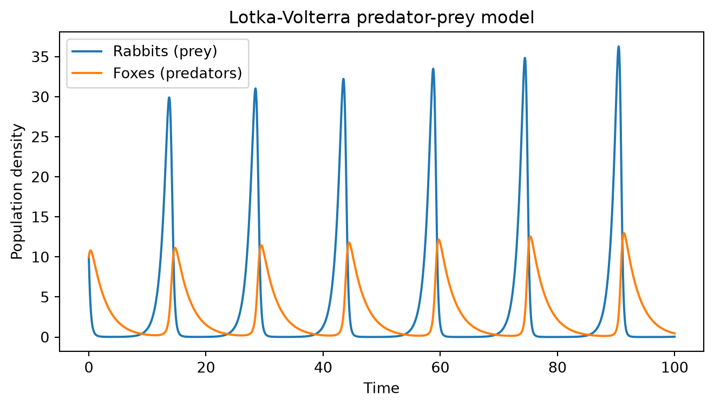
fig, ax = plt.subplots(figsize=(5, 5))
ax.plot(prey, pred)
ax.plot(prey[0], pred[0], "go", markersize=8, label="Start")
ax.set_xlabel("Rabbits (prey)")
ax.set_ylabel("Foxes (predators)")
ax.set_title("Phase-space plot")
ax.legend()
plt.show()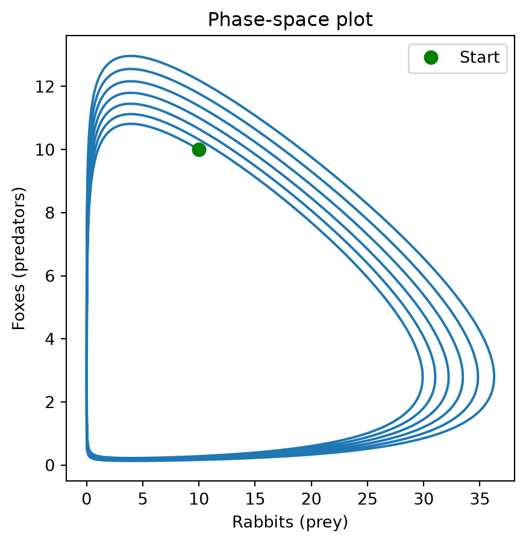
final_window = int(50 / dt) # last 50 time units at dt = 0.01
print(f"Total steps: {len(prey)}")
print(f"Last {final_window} steps ≈ last 50 time units")
print(f"Mean prey (last 50): {prey[-final_window:].mean():.2f}")
print(f"Mean pred (last 50): {pred[-final_window:].mean():.2f}")Total steps: 10001
Last 5000 steps ≈ last 50 time units
Mean prey (last 50): 3.80
Mean pred (last 50): 2.66# ---- Same set-up as before, plus a carrying capacity ----
K = 30.0
prey_L = np.zeros(n_steps + 1)
pred_L = np.zeros(n_steps + 1)
prey_L[0] = x0
pred_L[0] = y0
for i in range(n_steps):
x = prey_L[i]
y = pred_L[i]
dxdt = alpha * x * (1 - x / K) - beta * x * y # <-- the only change
dydt = delta * x * y - gamma * y
prey_L[i + 1] = x + dxdt * dt
pred_L[i + 1] = y + dydt * dt
fig, ax = plt.subplots(figsize=(8, 4))
ax.plot(time, prey, label="Rabbits (classic)", linestyle="--")
ax.plot(time, prey_L, label=f"Rabbits (logistic, K = {K})")
ax.plot(time, pred_L, label=f"Foxes (logistic, K = {K})", linestyle=":")
ax.set_xlabel("Time")
ax.set_ylabel("Population density")
ax.set_title("Classic vs logistic prey growth")
ax.legend()
plt.show()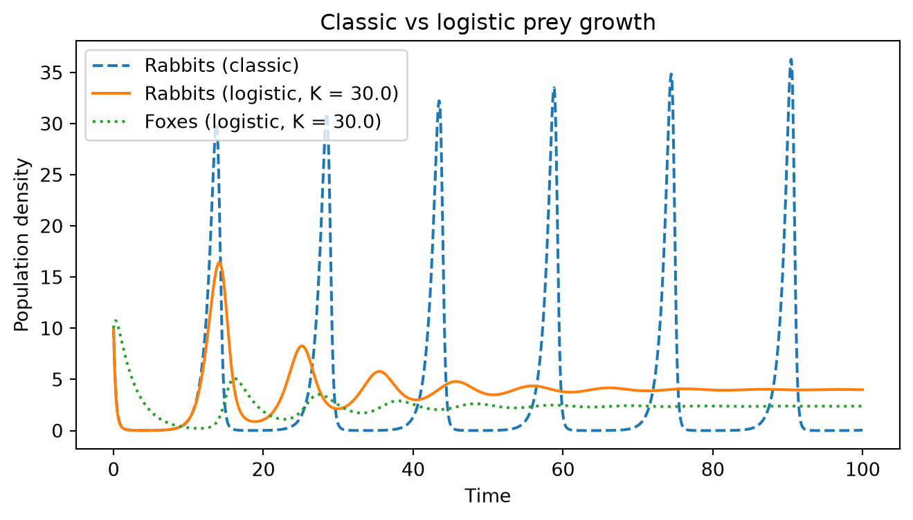
def decay_numerical(C0, k, dt, t_end):
"""Return arrays of time and concentration for forward-Euler tracer decay."""
n = int(t_end / dt)
C = C0
ts = [0.0]
Cs = [C0]
for i in range(n):
C = C + (-k * C) * dt # forward difference
ts.append((i + 1) * dt)
Cs.append(C)
return np.array(ts), np.array(Cs)
# The exact answer, for comparison
C0, k, t_end = 100.0, 0.5, 60
dt = 1.0
t_fine = np.linspace(0, t_end, 200)
exact = C0 * np.exp(-k * t_fine)
fig, ax = plt.subplots(figsize=(7, 4))
ax.plot(t_fine, exact, "k-", label="Exact")
for dt in [0.1, 1.0, 2.5]:
ts, Cs = decay_numerical(C0, k, dt, t_end)
ax.plot(ts, Cs, "o--", markersize=4, label=f"dt = {dt}")
ax.set_xlabel("Time")
ax.set_ylabel("Concentration C")
ax.set_title("Tracer decay: numerical vs exact")
ax.legend()
plt.show()